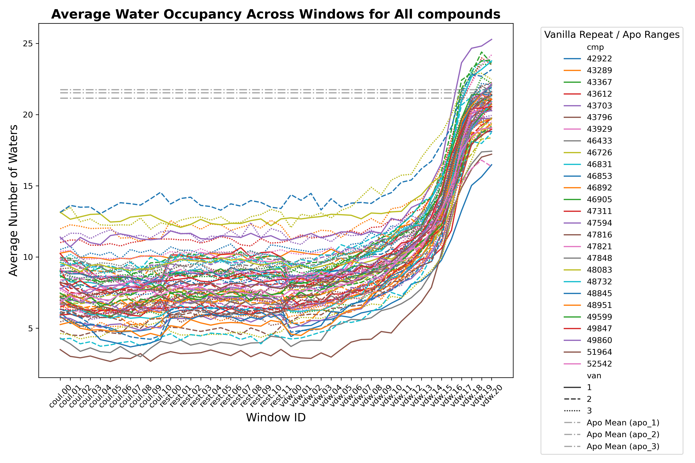

Binding Pocket Resolvation Analysis
Visualizing binding pocket resolvation across ABFE simulations is straightforward with FEPA. We follow a workflow similar to Tutorial 1, but instead of SelfDistanceFeaturizer, we use BPWaterFeaturizer to quantify water occupancy.
1. Load Config and Prepare Paths¶
import logging, os
from fepa.utils.file_utils import load_config
from fepa.utils.path_utils import load_abfe_paths_for_compound
logging.basicConfig(level=logging.INFO, format="%(asctime)s - %(levelname)s - %(message)s")
config = load_config("../../config/config.json")
analysis_output_dir = "wdir"
cmp = config["compounds"][0]
logging.info("Analyzing compound %s ...", cmp)
cmp_output_dir = os.path.join(analysis_output_dir, cmp)
os.makedirs(cmp_output_dir, exist_ok=True)
logging.info("Loading paths for compound %s...", cmp)
path_dict = load_abfe_paths_for_compound(
config,
cmp,
van_list=[1, 2, 3],
leg_window_list=[f"coul.{i:02d}" for i in range(0, 11)]
+ [f"rest.{i:02d}" for i in range(0, 12)]
+ [f"vdw.{i:02d}" for i in range(0, 21)],
bp_selection_string="name CA and resid 57 58 61 64 83 84 87 88 91 92 173 177 218 221 235 238 239 242 243 246",
apo=False,
)
2. Load trajectories and featurize waters¶
from fepa.core.ensemble_handler import EnsembleHandler
from fepa.core.featurizers import BPWaterFeaturizer
logging.info("Loading trajectories for compound %s ...", cmp)
ensemble_handler = EnsembleHandler(path_dict)
ensemble_handler.make_universes()
logging.info("Featurizing binding pocket waters ...")
bp_water_featurizer = BPWaterFeaturizer(ensemble_handler=ensemble_handler)
bp_water_featurizer.featurize(radius=10) # Count waters within 10 Å of pocket COM
logging.info("Saving features for compound %s ...", cmp)
bp_water_featurizer.save_features(cmp_output_dir, overwrite=True)
3. Plot Water Occupancy Over Time or Windows¶
import pandas as pd
import matplotlib.pyplot as plt
import seaborn as sns
features_df = pd.read_csv(os.path.join(cmp_output_dir, "WaterOccupancy_features.csv"))
for van in [1, 2, 3]:
van_features_df = features_df[features_df["ensemble"].str.contains(f"van_{van}")]
plt.figure(figsize=(12, 6))
sns.lineplot(data=van_features_df, x="Time (ps)", y="occupancy", hue="ensemble")
plt.title(f"Water Occupancy for {cmp}")
plt.xlabel("Time (ps)")
plt.ylabel("Number of Waters")
plt.xlim(0, 20000)
plt.legend(title="Ensemble", bbox_to_anchor=(1.05, 1), loc="upper left", ncol=2)
plt.tight_layout()
plt.savefig(os.path.join(cmp_output_dir, f"{cmp}_water_occupancy_van{van}.png"))
# Extract vanilla replicate and window ID
features_df["van"] = features_df["ensemble"].str.extract(r"van_(\d)")
features_df["id"] = features_df["ensemble"].str.replace(r"_van_\d+", "", regex=True)
# Compute average occupancy
avg_df = features_df.groupby(["id", "van"], as_index=False)["occupancy"].mean()
avg_df.to_csv(os.path.join(cmp_output_dir, "avg_water_occupancy.csv"), index=False)
# Plot average occupancy
plt.figure(figsize=(12, 8))
sns.lineplot(data=avg_df, x="id", y="occupancy", hue="van", palette="tab10")
plt.title(f"Average Water Occupancy Across Windows for {cmp}", fontsize=16, fontweight="bold")
plt.xlabel("Window ID", fontsize=14)
plt.ylabel("Average Number of Waters", fontsize=14)
plt.legend(title="Vanilla Repeat", title_fontsize=12, fontsize=10, loc="upper right")
plt.xticks(rotation=45, fontsize=10)
plt.yticks(fontsize=10)
plt.tight_layout()
plt.savefig(os.path.join(cmp_output_dir, f"{cmp}_water_occupancy_across_windows.png"), dpi=300)
plt.close()

Figure 1. Binding-pocket water solvation across ABFE windows for all compounds in the OX2R Deflorian et al. Set 1 dataset.